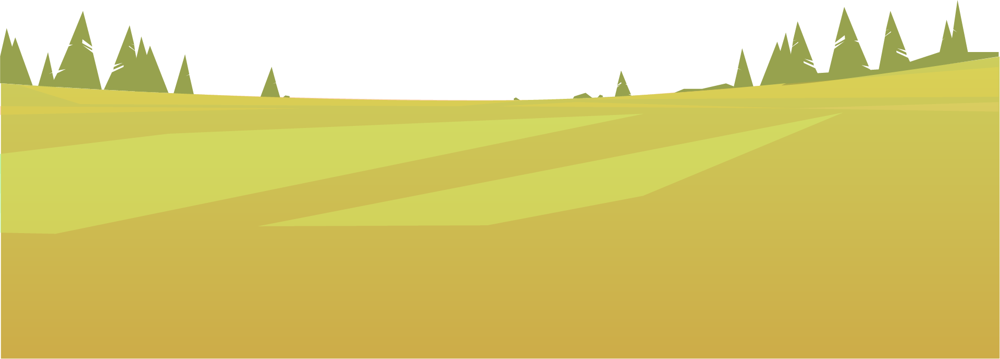
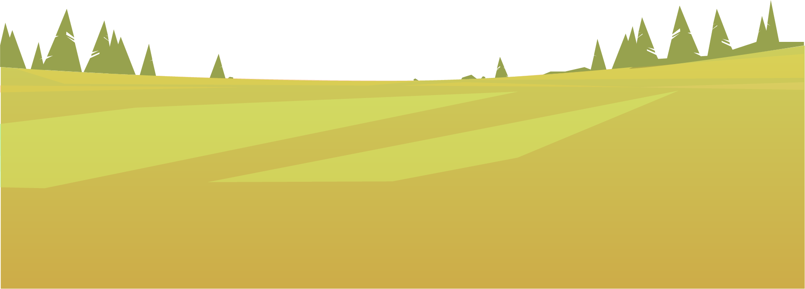
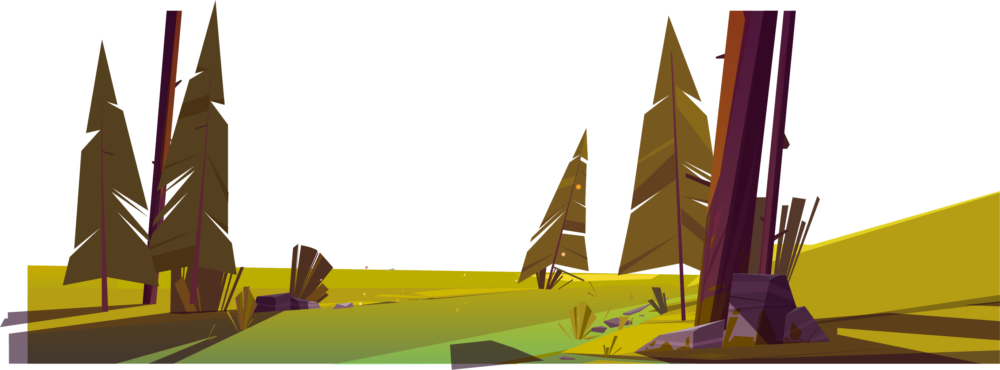
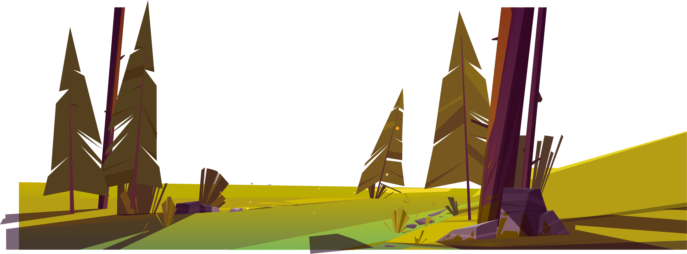
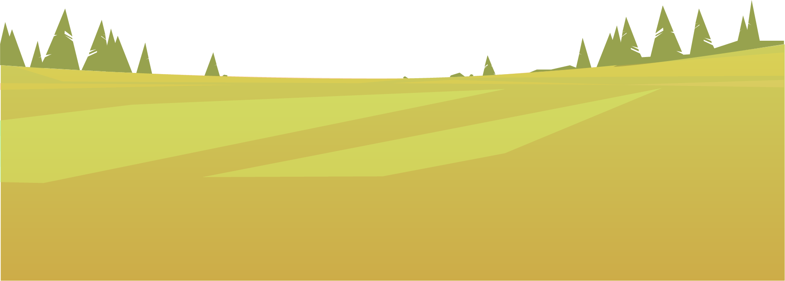
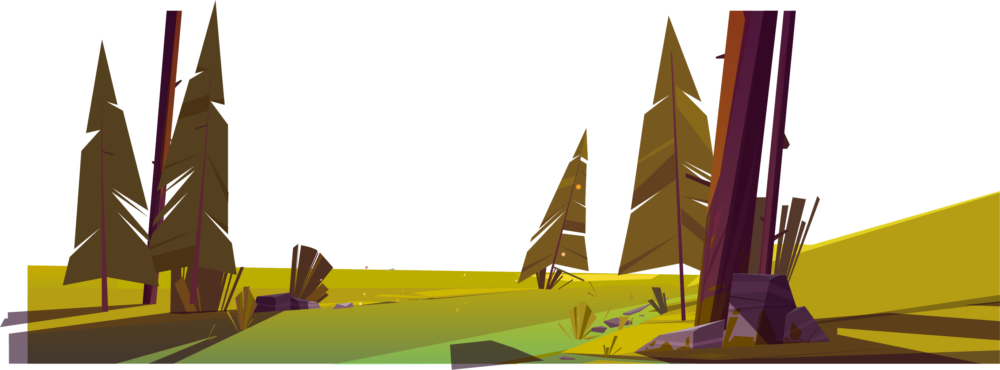
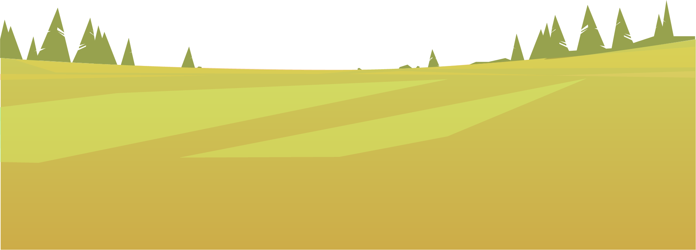
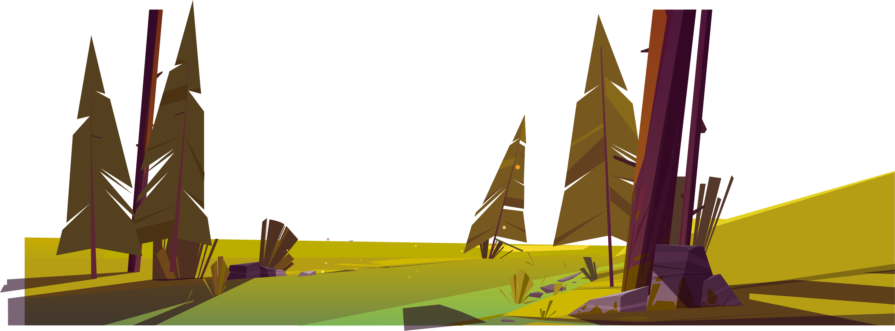

 

 



Voici l'histoire de Ahaan, né dans un petit village de pêcheurs nommé Kollidam, au Sud de l'Inde.
Toute sa vie ne se résumait qu'à une chose : sa ferme. C'est ici qu'il cultive le blé et élève ses poules. Mais un jour, Ahaan rencontra Mishka, la fille d'un riche pêcheur du village. Très vite, ils tombèrent fous amoureux l'un de l'autre, Ahaan découvrit une sensation qu'il n'avait encore jamais ressentie auparavant, il était heureux et ne pensait plus qu'à elle.
Malheureusement, le père de Mishka n'était pas de cet avis. Sa fille ne peut pas épouser un « Sudra* », comme il l'appelait. (* Système de caste en Inde.) Malgré ses multiples avertissements et pour qu'ils ne se revoient plus, le père de Mishka prit la décision radicale d'enfermer sa fille lorsqu'il partait en mer.
Mishka ne voyait presque plus la lumière du soleil, elle déprimait. Un jour, en rentrant chez lui, le vieux pêcheur trouva sa fille allongée sur le sol, tremblante et pleine de sueur. Il appela les meilleurs médecins de Kollidam, les druides, les sorcières, mais personne ne pouvait sauver la pauvre Mishka. L'une des sorcières lui donna alors un espoir : « Une plante peut la sauver : l'Edelweiss givré ! Mais elle ne pousse qu'au sommet des plus hautes montagnes enneigées. »
La nouvelle se répandit dans tout le village, mais ne vivant pas dans une région montagneuse, sa fille était d'ors et déjà condamnée. Quand Ahaan apprit la nouvelle, il prit son courage à deux mains et se confronta au vieux pêcheur : « Je gravirai l'Everest pour trouver l'edelweiss givré, je sauverai ta fille et tu m'offriras sa main. ». Le père, voyant son dernier espoir, acquiesça d'un signe de la tête à Ahaan, qui partit aussitôt en direction du Népal.